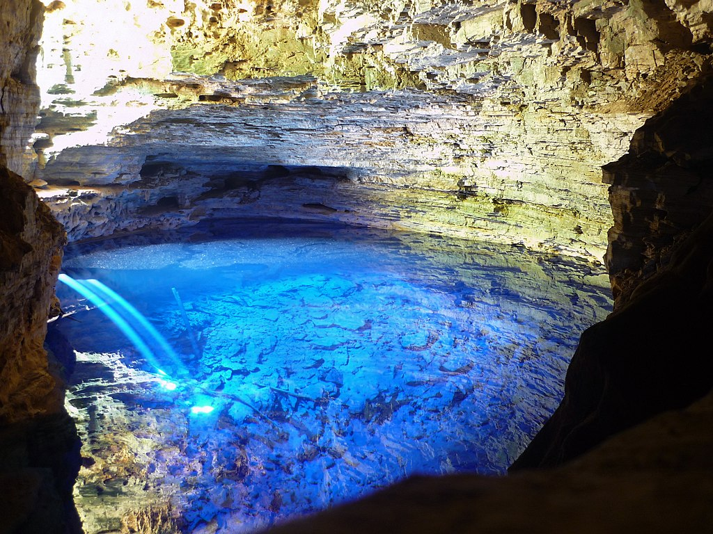
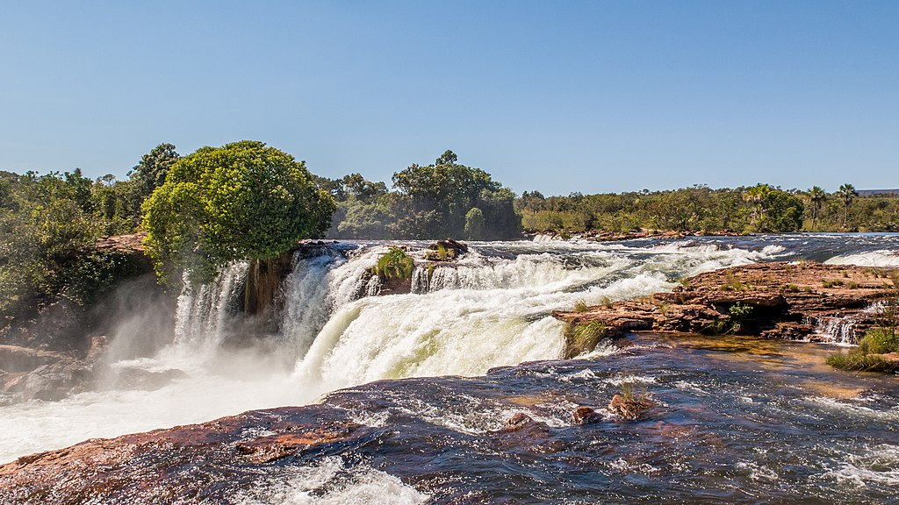

According to the International Union for Conservation of Nature (IUCN): "A protected area is a clearly defined geographical space, recognised, dedicated and managed, through legal or other effective means, to achieve the long term conservation of nature with associated ecosystem services and cultural values" (International Union for Conservation of Nature [IUCN], 2008).
  They can have many purposes and bring many benefits to the communities where they are installed, to the planet, and to humankind. Let's take Fernando de Noronha (the image right before this paragraph), in Brazil, as an example. That island was given the status of World Heritage Site by the United Nations Educational, Scientific and Cultural Organization (UNESCO).
First of all, this region is a feeding place for many species like sharks, turtles, tuna, and many others. Hence, by protecting this area, we may help to guarantee the survival of those species. It also serves as a shelter for some endangered species.
Secondly, because of its singular conditions, this protected area attracts numerous researchers, who may pursue their research under authorization.
Finally, it's worth mentioning that the site has 2 different levels of access and restrictions. There is a considerable part where tourism is allowed, it brings money to the local community, provides healthy leisure for foreigners, and promotes environmental awareness.
Carvalho, R. C. (Photographer). (2014). Islands and Beachs in Fernando de Noronha [Digital image]. Retrieved from https://upload.wikimedia.org/wikipedia/commons/0/05/Ilhas_e_Praias_em_Fernando_de_Noronha_02%3B_Islands_and_Beachs_in_Fernando_de_Noronha.jpg.
D'Andretta, J. (Photographer). (2021). Cachoeira da Velha na unidade de conservação da natureza pertencente ao governo do estado de Tocantins [Digital image]. Retrieved from https://upload.wikimedia.org/wikipedia/commons/e/ea/Parque_Estadual_do_Jalap%C3%A3o_Jo%C3%A3o_Paulo_Marques_Dandretta_%288%29.jpg
Hernandes, A. R. S. (Photographer). (2011). Pantanal [Digital image]. Retrieved from https://upload.wikimedia.org/wikipedia/commons/d/d6/Pantanal_Birds.jpg.
Pedrobcf. (Photographer). (2014). Parque Nacional da Chapada Diamantina de nível Federal, localizado (a) em Palmeiras (BA), Mucugê (BA), Lençóis (BA), Ibicoara (BA), Andaraí (BA)) [Digital image]. Retrieved from https://upload.wikimedia.org/wikipedia/commons/2/22/ParqueNacionaldaChapadaDiamantina_PedroBritoCandidoFerreira_%2805%29.jpg.
International Union for Conservation of Nature. (2008). About - Protected Areas | IUCN. Retrieved from https://www.iucn.org/theme/protected-areas/about
Rocha, E (Photographer). (2018). Parque Nacional da Chapada Diamantina de nível Federal, localizado (a) em Palmeiras (BA), Mucugê (BA), Lençóis (BA), Ibicoara (BA), Andaraí (BA)) [Digital image]. Retrieved from https://upload.wikimedia.org/wikipedia/commons/1/19/Parque_Nacional_da_Chapada_Diamantina_Ederval_Rocha_%2819%29.jpg
Rocha, H. L. C. (Photographer). (2014). White dunes and lagoons of the Lençóis Maranhenses National Park. [Digital image]. Retrieved from https://upload.wikimedia.org/wikipedia/commons/7/75/Dunas_e_lagoas_dos_Len%C3%A7ois_Maranhenses_%28cropped%29.jpg.
Disclaimer: The images may have suffered some alterations like resizing..jpg){kind=link}
{kind=link}
{kind=link}
.jpg){kind=link}
.jpg){kind=link}
.jpg){kind=link}